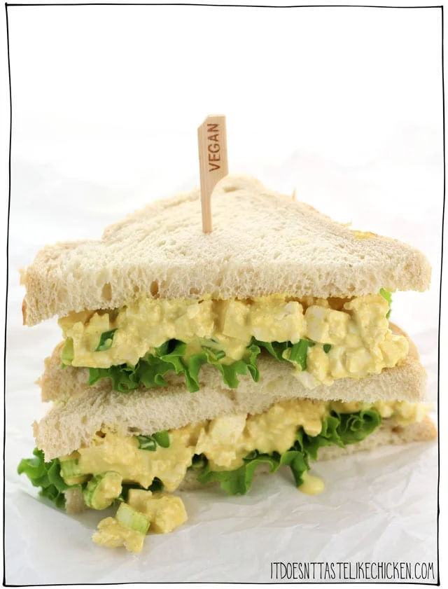

Vegan Egg Salad

Description
This is the best and easiest recipe I know! You will have yourself a delicious and nutritional lunch whipped together in just a few minutes.
Feel free to customize it with different herbs if you would like! Serve with bread or lettuce wrap to make a sandwich.
Ingredients
- 1 block medium-firm tofu
- 6 tablespoons vegan mayo
- 2 tablespoons nutritional yeast
- 2 teaspoons yellow mustard
- 2 green onions, chopped
- 3/4 teaspoon black salt
- 1/4 teaspoon turmeric
- salt and pepper, to taste
Steps
- Chop the tofu into small cubes
- Add the tofu to a large bowl and mix with the rest of the ingredients
- Serve as a sandwich or in a salad